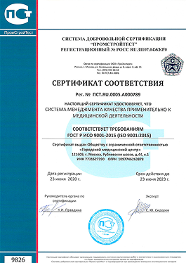

Программы наблюдения за здоровьем ребенка
10% скидка на все услуги центра
Поручите наблюдение за здоровьем ребенка квалифицированному и опытному врачу
Акция действует до: 17 ноября 2023 года
.png)
Поручите наблюдение за здоровьем ребенка квалифицированному и опытному врачу
Акция действует до: 17 ноября 2023 года
Внимание! Всем участникам программ наблюдения за здоровьем ребенка на время действия программ предоставляется 10% скидка на все услуги центра (кроме стоматологии и косметологии).
Городской Медицинский Центр предлагает программы наблюдения за здоровьем детей. Квалифицированные специалисты Центра постараются решить все проблемы со здоровьем, сопутствующие периоду роста ребёнка.
Самый надежный способ обезопасить своего ребёнка – поручить наблюдение за его здоровьем квалифицированному, опытному врачу. Для того чтобы упростить Вам решение этой задачи. Программа включает в себя все необходимые составляющие, обеспечивающие полноценную медицинскую заботу о самых маленьких пациентах, и выстроена таким образом, чтобы не только сопроводить Вашего ребёнка квалифицированной помощью опытных специалистов, но и облегчить бремя родительской заботы, насколько это возможно. Вашего ребёнка будет вести персональный педиатр, который в течение года будет следить за здоровьем Вашего ребёнка. В случае, если Вы проживаете в Мытищинском районе к стоимости программ добавляется коэффициент 1,1.
Первый год жизни ребёнка особенно важен: именно в возрасте от 0 до года закладываются основы нашего здоровья. От того, как будет построена забота о ребёнке в этот период, во многом зависит, что ждёт его в будущем – насколько крепким станет его иммунитет, какими болезнями он будет болеть, к каким заболеваниям окажется предрасположен. Не случайно 90% всех прививок, плановых осмотров, анализов и исследований приходится именно на первый год жизни. Родители, исповедующие ответственный подход к здоровью ребёнка, неизбежно задумываются, как лучше всего обеспечить необходимый контроль за здоровьем своего малыша.
15 350 ₽
14 250 ₽
26 850 ₽
22 320 ₽
Вашему ребёнку – от года до трех. Это – особенная эпоха в его жизни, когда малыш начинает осознавать свои желания, учится управлять ими, думать и говорить. Именно в этом возрасте закладываются основы личности: от того как ребёнок освоит процессы коммуникации, какие навыки общения он приобретёт, – будет ли он добиваться своего или, наоборот, искать компромиссы, насколько эмоционально привыкнет переживать свои успехи и неудачи, – во многом зависит, как сложится его жизнь в дальнейшем. На эти годы приходится пик информационной и эмоциональной нагрузки. А это значит, что здоровье малыша нуждается в профессиональной медицинской защите.
< Назад к акциям

Главный врач, уролог, андролог

Врач-невролог

Врач-терапевт

Врач-терапевт


Сертификат ГОСТ Р ISO 9001-2015
.png)
Лицензия Л041-01162-5000369739 (выписка из реестра)
.png)
Лицензия Л017-01162-50/00561579 (выписка из реестра)
.png)
Лицензия Л041-01162-50/00338967 (выписка из реестра)
.png)
Информация о ценах носит уведомительный характер и не является публичной офертой. Действующий прейскурант, заверенный печатью и подписью руководителя, находится на информационных стендах Центра. Деятельность ООО «ГМЦ» осуществляется на основании действующей лицензии, выданной Департаментом здравоохранения города Москвы. Имеются противопоказания. Необходимо проконсультироваться со специалистом